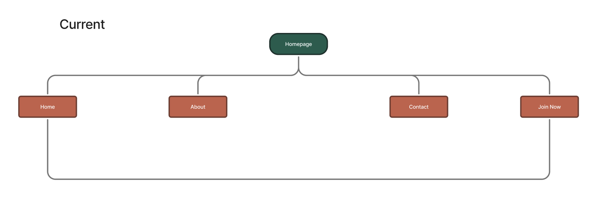
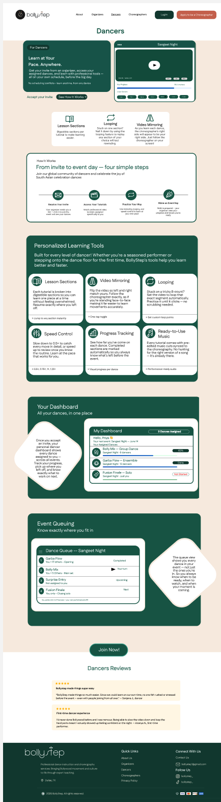
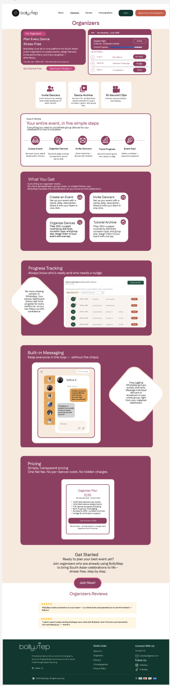

01 — Final Design
A glimpse of what we built.
Role-based navigation, simplified onboarding, and an explore-first experience — designed to reduce drop-off and build trust.

Design exploration 01

Design exploration 02
Helping South Asian wedding groups coordinate and learn dances — asynchronously.
Role-based navigation, simplified onboarding, and an explore-first experience — designed to reduce drop-off and build trust.
Design exploration 01
Design exploration 02
Users couldn't coordinate group dances across schedules and time zones — and the platform made it worse.
Users expected instant account creation but got redirected to a contact form.
No clear hierarchy — users couldn't find where to go or understand what the platform offered.
Dancers, Organizers, and Choreographers shared one confusing experience with no differentiation.
Hidden costs and no content previews killed trust before users even signed up.
"The platform added friction — unclear navigation, no pricing transparency, and a broken sign-up flow. Result: low trust and drop-offs before onboarding."
6 participants across all three roles. Revealed coordination challenges and platform confusion as the core barriers.
6participants interviewed

Evaluated against Nielsen's 10 heuristics. Found issues in navigation consistency, unclear flows, and missing trust signals.
10+usability violations found

Reviewed all landing and client-facing pages. Found dense copy, unclear messaging, and poor content hierarchy.
3critical content gaps identified


Sanjana is planning her cousin's wedding in 3 months. She needs 12 family members — spread across 4 cities and 3 time zones — to learn a coordinated Bollywood dance routine. She has no professional dance training and is managing everything via WhatsApp.

Contact form felt like a wall. Users wanted direct account creation.
Too many options, no clear path for any specific user type.
Dancers, Organizers, Choreographers had no distinct experience.
Hidden pricing and no previews stopped users from committing.
Managing group dances across time zones and skill levels was the fundamental challenge — but the platform barely addressed it.
The golden thread from research to solution.
| Insight | Design Decision | Impact |
|---|---|---|
| Confusing sign-up → contact form | Instant sign-up / log in directly from homepage | Removed #1 drop-off point |
| Unclear user roles | Role-based nav: Organizer · Dancer · Choreographer | Faster orientation for all users |
| Overwhelming content | Simplified IA, cleaner hierarchy, clear CTAs | Reduced cognitive load |
| Low trust — no pricing | Pricing transparency + social proof in funnel | Higher sign-up intent |
| No content preview | "Explore before commit" — browse dances first | Trust built before sign-up |


Mid-fidelity wireframes validated layout, navigation flow, and content hierarchy with real users before committing to high-fidelity design.


Dancers can browse available routines, preview tutorial videos, and understand what they're signing up for — before creating an account. Removes the biggest trust barrier.

Organizers get a dedicated dashboard to invite dancers, assign routines, track progress, and communicate — without needing a separate tool or WhatsApp group.

Choreographers have their own dedicated onboarding pathway — a clear "Apply to be a Choreographer" CTA with a streamlined application and profile creation flow.

Users hit a contact form that asked for name, email, and "tell us about your event" — with no clear sign-up path. Most dropped off here.

Direct email + password sign-up. No NDA barrier. Combined marketing and platform into one seamless flow.

Generic nav with "About", "Pricing", "Join Now" — no indication of who the platform is for or what it does for each user type.

Clear role-based navigation: Organizers · Dancers · Choreographers. Each leads to a tailored page with relevant content and CTAs.
Round 1 on the existing site. Round 2 on mid-fi prototype. Iterated to high-fidelity based on findings.


Mapped all critical decision points and friction opportunities across the three user roles.


Iterative sketching and design exploration showing the evolution from concepts to high-fidelity mockups.

Quantified impact across usability, adoption, and user satisfaction benchmarks.

Strategic recommendations for post-launch iterations and feature prioritization.
4m 12s → 1m 26s for core task
0% → 100% in Round 2
Up from 52 — "OK" to "Excellent"
Biggest single-sprint gain across cohort
Treating role differentiation as a first-class design constraint unlocked the biggest usability gains. This should be the default for multi-role products.
Missing pricing and social proof aren't just copy issues — they're IA problems that require intentional placement throughout the journey.
Three weeks forced ruthless prioritization. Heuristic evaluation gave us a defensible backlog faster than any stakeholder assumption list.
Most Dancers entered via a forwarded link — not the homepage. Always map the full entry surface, not just the marketing page.
South Asian weddings carry deep emotional stakes around performance and family. Future iterations should hold space for those cultural delight moments.
In-app rehearsal mode with sync playback, mobile-native experience, and a post-wedding reflection feature to close the emotional loop.
The interactive Figma prototype walks through all three role experiences — sign-up, dashboard, and core task flows.